01 / Business management
A clearer view of the day's work.
Keep an eye on receiving, suppliers, products and company settings without having to piece together every update from separate records.
- Admin dashboard and business workspace
- Secretary dashboard for daily work
- Business records, products and company settings
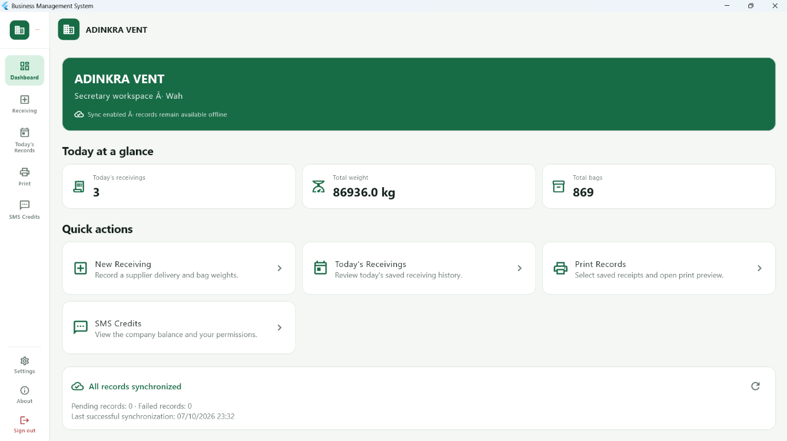
02 / Receiving
Record individual deliveries or use bulk entry.
Choose the option that fits the way you weigh deliveries: record bags one at a time, or enter several bags together with their total weight.
Individual receiving
Find a supplier, choose a product and enter weights for individual bags in a delivery.
Bulk receiving
Enter a number of bags and a total weight for a bulk record.
Supplier-linked records
Connect deliveries with supplier records for later review.
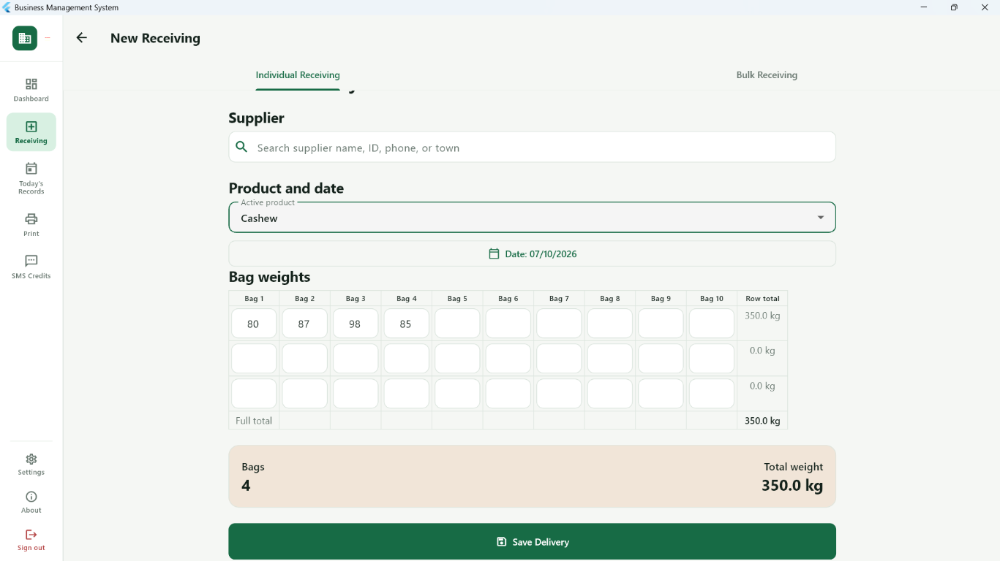
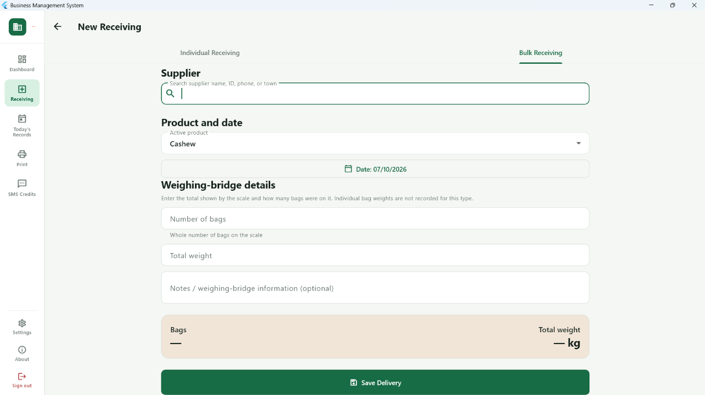
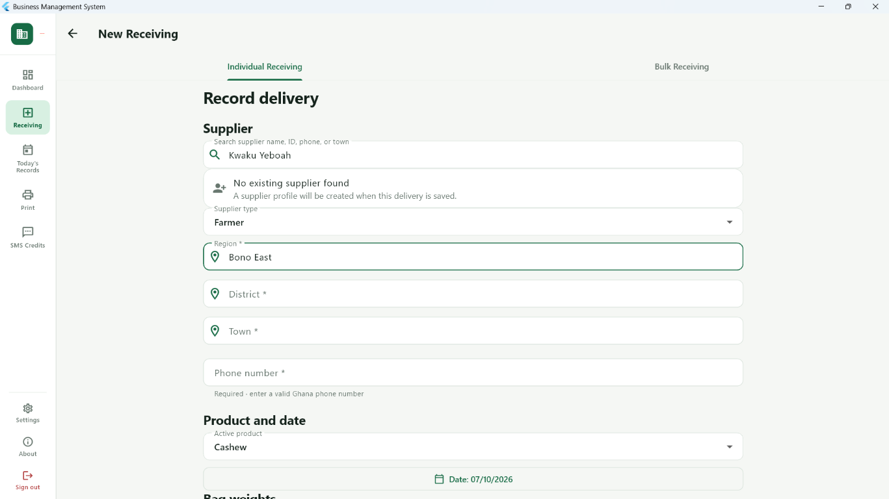
03 / Supplier management
Keep searchable profiles and connected history.
Store supplier profiles, identification and available contact details. Review recorded deliveries and supplier history from the supplier's profile, and prepare supplier statements.
- Supplier profiles and identification
- Searchable supplier information
- Delivery history linked to suppliers
- Supplier statements and historical records
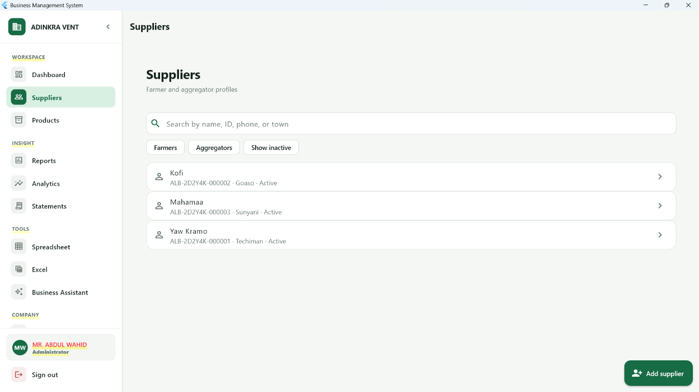
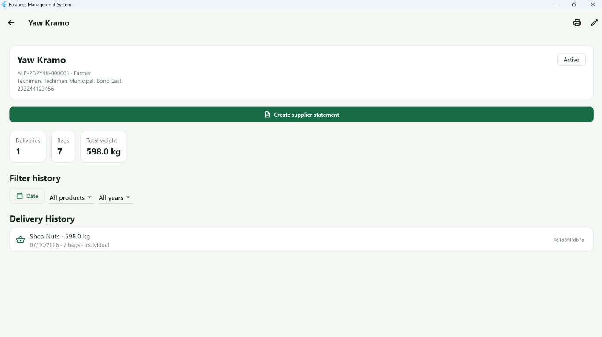
04 / Team & roles
Keep administrative controls with the Admin role.
Admin and Secretary are distinct operational experiences. Admins handle user and business administration; Secretary access is focused on operational functions and does not imply Admin-level permissions.
- User management
- Role-based access to permitted functions
- Secretary tools for receiving, records, printing and permitted SMS functions
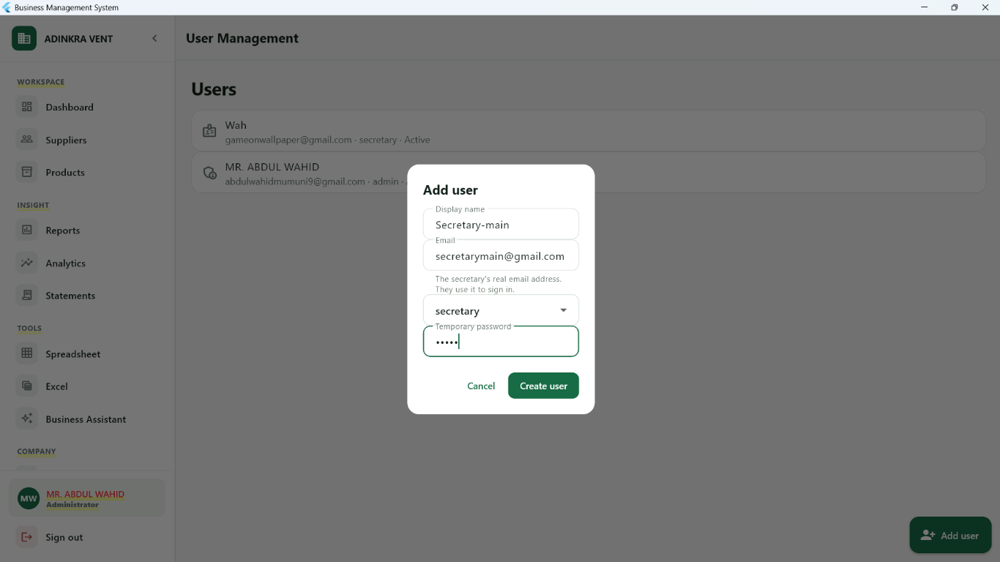
05 / Reports & analytics
Review business records and recorded activity.
Dashboard summaries, reports and analytics help business owners review receiving activity, products and supplier records. Use the views to understand your records; they are not professional financial advice.
- Dashboards and reports
- Analytics with filters and business activity summaries
- Supplier and product views
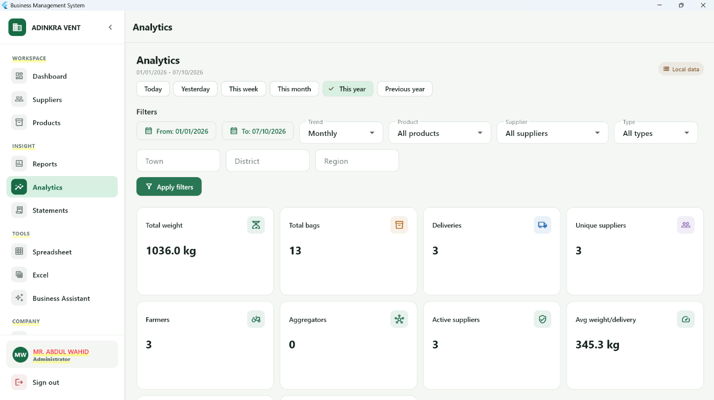
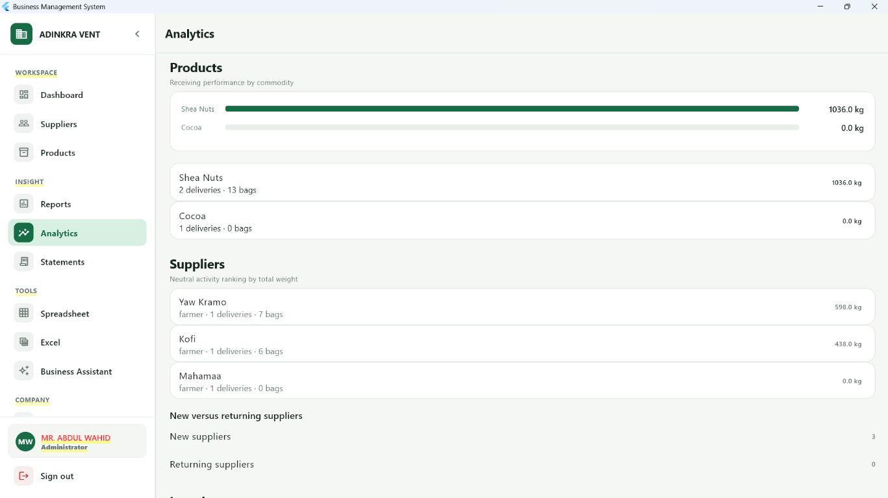
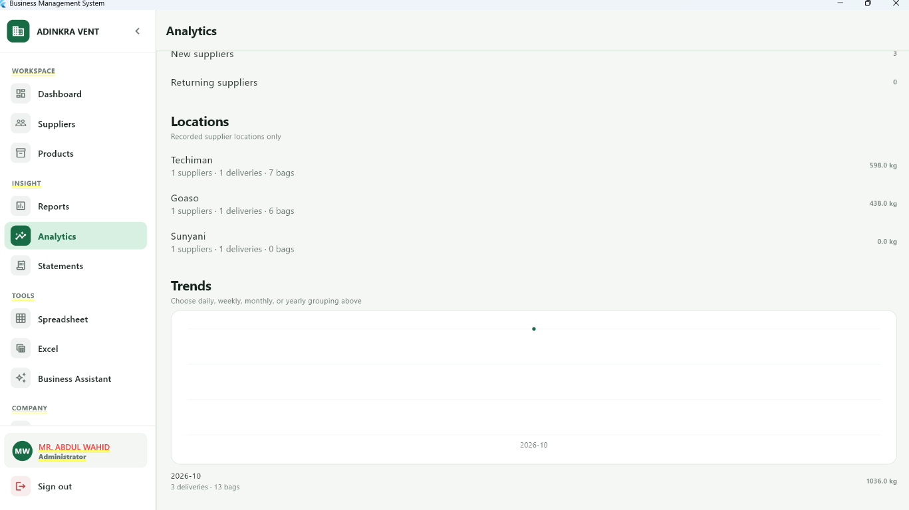
06 / Receipts
Print records or send SMS receipts using credits.
Print saved receiving records, or send an SMS receipt using SMS credits. SMS costs GH₵0.05 per message; SMS credits are separate from the business subscription.
- Printed receipts from saved records
- SMS receipts using the configured business sender ID
- SMS credits charged at GH₵0.05 per message
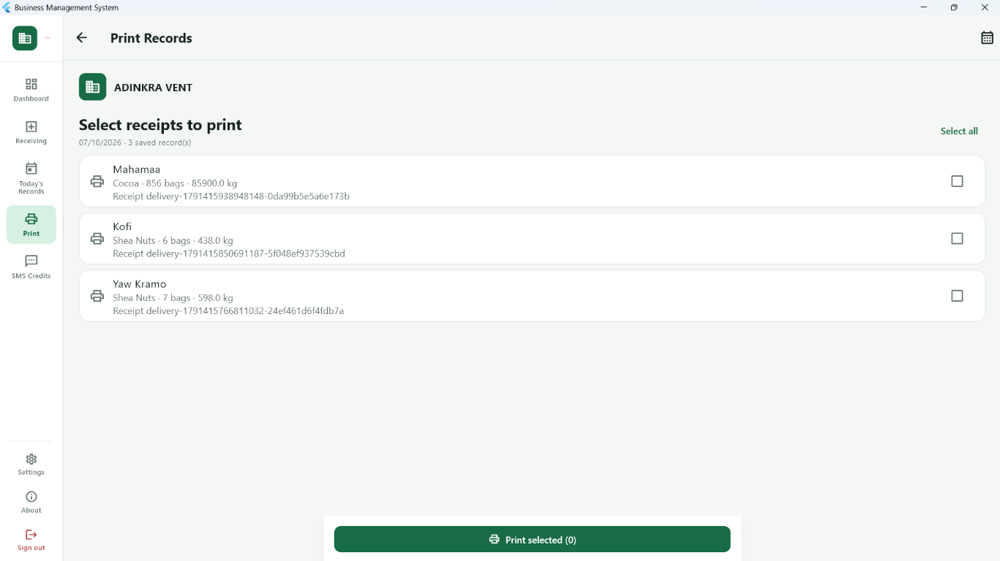
07 / Excel & data
Bring Excel records in, and take your data with you.
Admins can import existing Excel files into the software and export data from the software. A built-in spreadsheet is also available for working with business information, with limited features.
- Admin import of existing Excel files
- Export data from the software
- Built-in spreadsheet with limited features
08 / Synchronization
Connect devices through the cloud, not a shared Wi-Fi.
Cloud synchronization uses the internet, so Admin and Secretary devices may be in different locations. The product also uses local storage and SQLite for local functionality. Sync availability depends on an internet connection.
09 / Company management
Manage company details and branding.
Company settings include the business name, logo and SMS sender ID settings. Multiple businesses are supported, with business data separated by company.
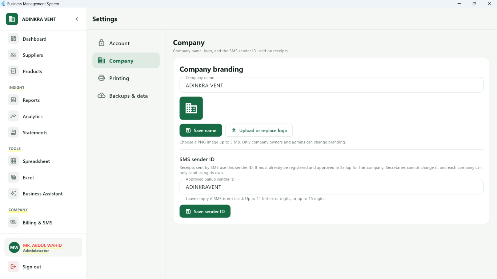
10 / Security & local data
Access business information through an account and role.
The application uses account authentication, role-based access, company-separated business data and database access controls. Local application storage supports local functionality. See the Security page for a high-level explanation.
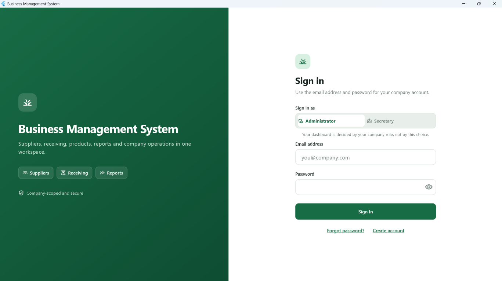
11 / Business Assistant
Get help understanding your own business information.
The Business Assistant is described as a way to help users understand and navigate information related to their business. No capability beyond that is claimed here.
The Business Assistant provides assistance based on available business information. It is not a substitute for professional financial, accounting, legal, tax, or investment advice.
12 / Backups
Business backup controls are part of the Admin workspace.
Backup options are available in company settings. Ask for a demo to review the available backup and restore workflow for your business before relying on it for a recovery plan.